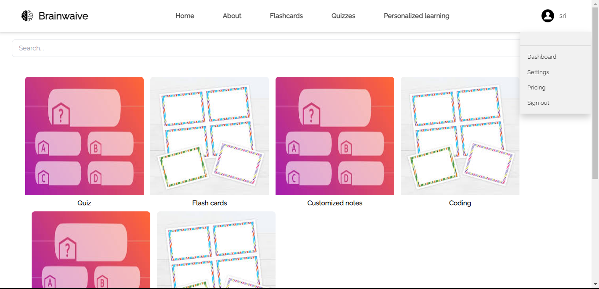

Below is a list of some of the projects I worked on.
Click an image or hyperlink in the description to learn more.
Click an image or hyperlink in the description to learn more.
Stack :
ReactJS, Python, FastAPI, Docker, Azure, Ffmpeg, Vite, SQL
► Developed a production-ready video assistant web app, EVA, as a part of capstone project which offers hybrid approach to video
editing. Utilized ffmpeg for robust video processing.
► Designed with a user-centric approach, EVA can be used by content creators of all levels. It offers a streamlined experience in video editing and audio processing, requiring no prior editing expertise.
► Integrated open-source machine learning models into workflow to enhance features: improve audio, give multi-layered
feedback and condenses video to key moments.
Watch our project video here.

Stack :
C++, CMake, wxWidgets, OpenCV
► a Face Recognition and Privacy Analysis Tool, a software application developed with the primary goal of providing face and object recognition capabilities. While its current focus is on recognizing faces and objects in various media elements.
► The inspiration for this tool is the growing concern regarding data privacy and the potential misuse of facial recognition technology
► Goal is to build lot of features on top of this face recognition tool.
►You can download the application here
Stack :
Python, OpenAI's Whisper, ffmpeg, wxPython
► VidCaptio is a free video captioning software
► Multi-Language Captioning: VidCaptio allows users to add captions in multiple languages to their videos.
► Flexible Captioning Options: Users have the option to choose which languages they want to add captions for.
► Speech Recognition: Uses OpenAI's Whisper to accurately transcribes speech from videos for captioning.
► Video Processing: Utilizing ffmpeg, VidCaptio processes videos for captioning, ensuring high-quality output.
Stack :
Python, Orcid API, OAuth2.0
► PyOrcid is a Python package and API client designed to simplify interactions with the ORCID API.
► ORCID (Open Researcher and Contributor ID) is a nonprofit organization that provides unique identifiers to researchers, ensuring their work is accurately attributed and discoverable.
► PyOrcid enables developers to seamlessly integrate ORCID functionality into their software, allowing users to collect, track, and sync their publication materials, research activities, and other related information.

Stack :
HTML, CSS, Javascript, Ajax, Python, Flask, beautifulsoup4, Words API
► Play a static version of the game here
► Developed an innovative variation of the classic Wordle game, featuring a dynamic and user-engaging interface including a daily leaderboard.
► Utilized Python and Flask for backend development, handling game logic and server-client interactions efficiently.
► Integrated Ajax for smooth and asynchronous data exchange, keeping the gameplay fluid and responsive.
► Implemented user authentication features, requiring players to log in, thus personalizing the gaming experience and enabling score tracking.

Stack :
React, React-Native, JS
► For learning purposes, I've been working on a facebook-clone app using React-native with expo.
► One of my first full-scale mobile app-dev experience and I've learned much about react-native's fundamental concepts like components, hooks, states, navigation etc..
Stack :
Python, Sci-kit Learn, Neural Networks
► WildLens is a machine learning model for fauna recognition, for a non-invasive approach to continuous wildlife census
► This system can be invaluable for automating species identification, aiding wildlife researchers, and contributing to biodiversity conservation efforts.
► Our model trained on large datasets of around 60,000 images while the ethicals considerations were prioritized.
► Learn more about the project in our paper.
Stack : C++, C, CMake, wxWidgets, XML
► Created a multi-level game called 'Bug Squash' involving various types of bugs attempting to infect programs.
► Implemented agile software development practices along with Unit-Testing practices, dynamic Animations, OOP, and concepts of Visitor and Observer patterns, Polymorphism.
► Contributed to a winning team in a Level 3 design contest organized by the CSE department.

I created an interactive piano entirely using HTML, CSS, and JavaScript. This project not only highlights my web development skills but also demonstrates my ability to build beautiful and mobile-friendly front-end applications. Click here to explore and play the piano.

Stack :
Python, Django, HTML, CSS, Tailwind, Javascript, OpenAI, NodeJS
► Recipient of the Best Emerging Technology Award at SpartaHack.
► Developed a fully operational, full-stack educational web application utilizing the Django framework.
► Empowers personalized learning with a multitude of components such as custom quizzes and flashcards tailored to students educational requirements.
► This provides a range of complementary services that enhance personalized learning products, equipping students with comprehensive tools essential for success throughout their academic journey.
► Currently in the development phase, our goal is to construct highly customized AI models designed to assist students across different grades, subjects, and formats.
Stack :
C++, C, CMake, miniaudio, wxWidgets, XML
► Developed a musical machine that utilized card input (with rows mapped to musical notes) to enable the various components to play.
► Designed a comprehensive UML class diagram, incorporating associations, inheritance, and attributes, as a preliminary step to development.
► Implemented advanced programming concepts such as Tweening, Visitor and Observer patterns, Polymorphism, Adaptation, Inheritance, and Composition.
► Successfully integrated and adapted the animated software into another program, to create an animated movie.
Note: This is a project from one of my classes (CSE335)
Stack :
Python, selenium, beautifulsoup4, PyZotero, streamlit
► Developed an automated software solution, simplifying the tasks of merging and reformatting data from diverse sources. This resulted in the creation of an efficient and current departmental database.
► Streamlined the navigation process from the old database format to a new, efficient format that provides enhanced and relevant information for each member of the department.
► Utilized PyZotero and web-scraping techniques to integrate data and references, enhancing the accuracy and credibility of the department's database content.
► Contributed to enhancing departmental efficiency by providing a data-driven solution that enabled faster access to accurate information, ultimately supporting better decision-making processes.
Stack :
C++, C, CMake, wxWidgets
► Developed a fun program involving a heavy animated aquarium that can be populated.
► This project involves concepts like file saving/loading of formats, Refactoring, Inheritance, and Unit testing.
Stack :
Python, Tkinter
► A fun personalized project where I developed a Tic Tac Toe game utilizing the Tkinter library in Python. This interactive game allows users to enjoy the classic gameplay experience on their desktop.
► Incorporated intelligent logic to handle player turns, validate moves, and determine winning conditions, ensuring a seamless and enjoyable gameplay experience for users of all skill levels.